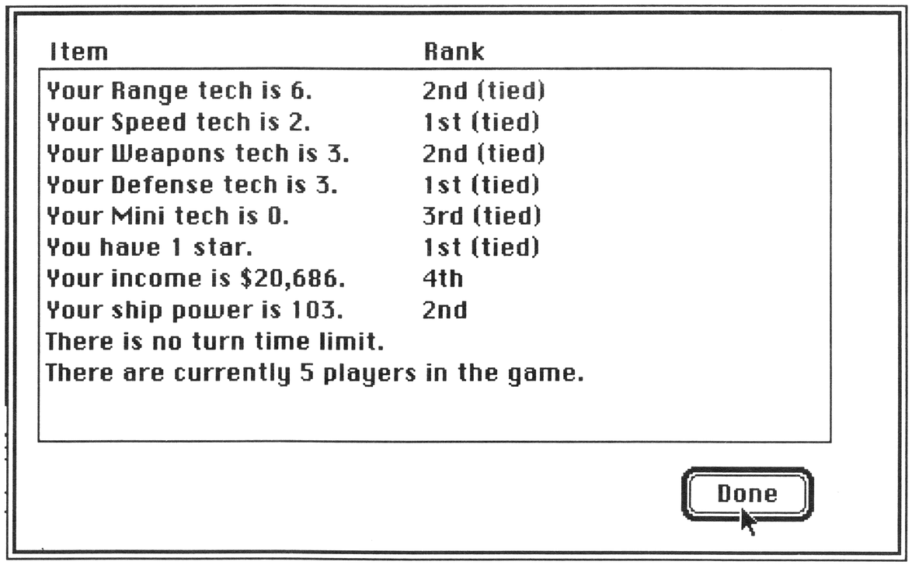

Comparing Players
If you ever get the urge to see how you’re doing compared to the other players in the game, select “Compare Players...” from the “Galaxy” menu. You will get to see how some of your attributes (like Weapon Tech or income) compare to others.
The “number of players in the game” will not include anyone who has been eliminated (whose income is 0).
In a multiplayer game with a turn time limit, the “Compare Players...” dialog will tell you when the current turn will end.
